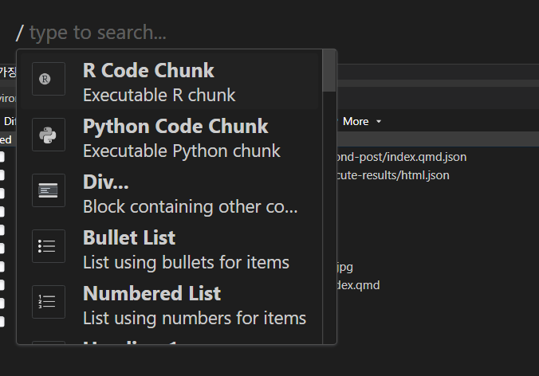
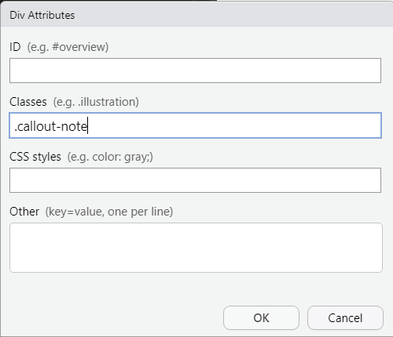

flowchart LR
A(Qmd) --> B[Pandoc]
B --> C{Kniting}
C --> D[Word]
C --> E[HTML]
C --> F[PDF]

본 포스팅에서는 Qmd 문서를 Visual editor를 사용해서 작성하는 방법에 대하여 알아본다. 관련한 유튜브 영상으로 글로 표현하지 못하는 부분은 대체합니다.
Visual editor에서 사용하는 모든 기능을 찾을 수 있는 검색 단축키 Ctrl + / 는 무조건 알고 있어야 한다.

글자를 굵게 표현: Ctrl + B
글자를 기울게 표현: Ctrl + I
글자 스트록 넣기: ~~테스트~~ 테스트
위 첨자: 테스트^위첨자^ 테스트위첨자
아래 첨자: 테스트~위첨자~ 테스트아래첨자
인라인 코드 넣기(문서 안에 코드 폰트로 넣기): Ctrl + D
Ctrl + / 를 사용해서 H1 ~ H6 까지 찾아서 쓰자!
Qmd에서 바로 작업시에는 대괄호 안에 표현될 글자, 중괄호 안에 연결할 링크를 넣어야 하지만, Visual Editor에서는 작동하지 않음.
[Quarto](https://quarto.org)
Visual Editor에서는 단축키 Ctrl + K를 사용하여 입력하면 된다.
에디터 위쪽 그림버튼 클릭하기, 혹은 Ctrl+/ 로 Figure 검색하면 다음과 같은 화면이 나온다.
Browse 버튼 눌러서 파일 선택하거나, URL을 집어넣으면 됨.
크기 조정하는 방법은 일단 삽입 후 점 버튼을 눌러 볼 것!
오른쪽의 점 세개를 클릭하면 그림 사이즈 조정하는 옵션 뜬다.
혹은 에디터에서 그림을 클릭하게 되면 바로 아래쪽에 그림 크기 조정 메뉴가 활성화 됨을 알 수 있다.
방법1. 위쪽 버튼 클릭 혹은 Ctrl + / 검색하기!
방법 2. 그냥 별표 (*) 누르고, 혹은 1. 입력 후, 한 칸 공백을 삽입하면 자동으로 리스트 작성모드로 들어감.
테스트
테스트
ordered 리스트 삽입 후 점 세개 버튼을 클릭하면, 기존의 리스팅 번호를 바꿀 수 있음!
Visual editor 테이블 기능 사용하면 됨. (위쪽 table) 클릭하면 다음과 같은 메뉴가 나옴.
코드 블록은 그냥 코드만 넣는 기능! 언어를 선택할 시 그에 맞는 하이라이팅 기능 제공. Ctrl + / 검색으로 Code block 넣기 선택!
import os
1 + 1위의 코드는 다음과 같이 언어 선택에서 python을 선택한 경우임.
기본 적인 수식 입력은 Ctrl + / 로 inline math 혹은 display math 선택
커스텀 LaTeX 코드를 입력하고 싶은 경우, 따로 def을 사용해서 설정 할 수 있음. 커스텀 코드는 보여주고 싶지 않으므로 다음과 같이 .hidden으로 감싸줌.
위와 같이 입력해놓으면 새로운 latex 코드인 \RR 함수를 사용 할 수 있음.
\RR -> \(\bf{R}\)mermaid 앱을 사용하여 flow chart 그리는 것을 지원해 줌! 주의할 점은 Rcode 청크를 먼저 입력한 후에, {r} 부분을 {mermaid} 바꿔주면 됨.
아래와 같은 mermaid 코드는
flowchart LR
A[qmd] --> B(Pandoc)
B --> C{Kniting}
C --> D[Word]
C --> E[HTML]
C --> F[PDF]flowchart LR는 왼쪽에서 오른쪽으로 가는 flow chart를 의미
대괄호 (사각형 엣지), 중괄호 (마름모), 괄호 (둥근 엣지) 를 의미
%%| echo: true 옵션으로 코드 에코 지원
실행 언어를 mermaid 로 설정
다음과 같은 flow chart를 생성해낸다.
flowchart LR
A(Qmd) --> B[Pandoc]
B --> C{Kniting}
C --> D[Word]
C --> E[HTML]
C --> F[PDF]
엄청 많은 템플릿을 지원하므로, mermaid 홈페이지를 참고하자.
sequenceDiagram 예제
```{mermaid}
%%| fig-width: 80%
sequenceDiagram
participant Alice
participant Bob
Alice->>John: Hello John, how are you?
loop Healthcheck
John->>John: Fight against hypochondria
end
Note right of John: Rational thoughts <br/>prevail!
John-->>Alice: Great!
John->>Bob: How about you?
Bob-->>John: Jolly good!
```
sequenceDiagram
participant Alice
participant Bob
Alice->>John: Hello John, how are you?
loop Healthcheck
John->>John: Fight against hypochondria
end
Note right of John: Rational thoughts
prevail!
John-->>Alice: Great!
John->>Bob: How about you?
Bob-->>John: Jolly good!
stateDiagram 예제
```{mermaid}
stateDiagram
direction TB
[*] --> 문서작업시작
문서작업시작 --> 열심히연구
열심히연구 --> 행복!
state 열심히연구 {
direction LR
코드작성 --> 코드리뷰
}
열심히연구 --> 좌절ㅠ
```
stateDiagram
direction TB
[*] --> 문서작업시작
문서작업시작 --> 열심히연구
열심히연구 --> 행복!
state 열심히연구 {
direction LR
코드작성 --> 코드리뷰
}
열심히연구 --> 좌절ㅠ
Graphviz의 경우 //| echo: true 옵션을 사용하여 코드 에코 기능을 사용할 수 있음. 다음과 같은 코드는 네트워크 관계도를 만들어 줌.
dot으로 설정```{dot}
graph G {
layout=neato
run -- intr;
intr -- runbl;
runbl -- run;
run -- kernel;
kernel -- zombie;
kernel -- sleep;
kernel -- runmem;
}
```
콤마 세개 연산자
::: 를 사용하면 HTML 언어에서의 div를 설정할 수 있음. 이러한 기능은 원하는 특정 서식을 원하는 부분에 적용할 수 있도록 도와줌.
::: {.callout-note}
이 문장을 Note로 만들어 줍니다.
:::이 문장을 Note로 만들어 줍니다.
Visual editor 에서는 Ctrl + / 를 사용해서 Div를 선택 후, class에 .callout-note를 입력

#| 를 사용해서 옵션 설정함. 설정할 수 있는 옵션들
echo
eval
output
include
warning
error
위의 옵션들을 true 혹은 false로 설정할 수 있음.